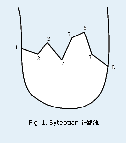
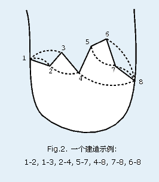

第一行两个整数: 城镇数n和要建造的摩托车道数k, 1 <= n,k <= 20000. 接下来k行每行两个数pi, qi: 表示第i条摩托车道要连接的两个城镇, 1 <= pi < qi <= n. 一对城镇最多出现一次.
Byteotia 城位于一个半岛上. 从king Bitol 开始铁路开始成为Byteotia主要的交通途径. King Bitol 建造了一个超速铁路线. 这条干线连接了半岛的西边和东边, 经过了Byteotia 的所有城镇,这些城镇从1 到 n. 城镇1 在西海岸而城镇n 在东海岸.

最近多亏了总理Byterowicz, Byteotia 的经济增长十分迅速而且交通系统变得非常的现代化. King Byteol 下命令建造一些摩托车道. 每个摩托车道直接连接两个选定的地点. 因为每条摩托车道都是由不同的政府部门负责修建, 所以任何一条摩托车道都不能和其他的相交. 每条摩托车道要么修建在铁路的北面或者南面. Figure 2 展示了一个简单的摩托车道修建计划(摩托车道为虚线, 铁路为实线).  King Byteol 已经决定了哪些城镇将被摩托车道相连. 你的任务就是决定每条摩托车道是修建在铁路的南面还是北面. 记住,任何情况下摩托车道都不能互相交叉.
如果不存在合法的建造方案,输出NIE, 否则输出一组方案,每行一个字母N或者S表示第i条摩托车道是修建在北边(N)还是南边(S).如果有多种方案,输出任意一种即可.
8 7
1 2
1 3
2 4
5 7
4 8
7 8
6 8
N
N
S
S
S
N
N
请不要提交，希望有人提供SPJ.